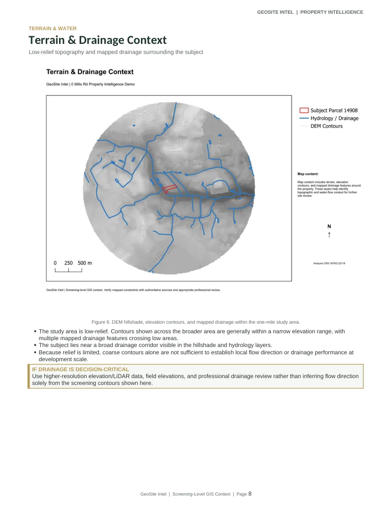

Completed report / Pitt County, NC
0 Mills Road: Property Intelligence
A 13-page screening demonstration covering parcel conditions, flood mapping, wetland context, soils, hydrology, imagery, surroundings, and verification needs.
Read case studyGeoSite Intel / Portfolio
Two separate collections: land-intelligence projects and technical automation demonstrations. The purpose is to show methods, outputs, and limitations, not generic claims.
Portfolio / 01
Independent GIS research, environmental context, mapping, land-cover interpretation, and conceptual site scenarios.
Completed report / Pitt County, NC
A 13-page screening demonstration covering parcel conditions, flood mapping, wetland context, soils, hydrology, imagery, surroundings, and verification needs.
Read case study
QGIS scenarios / Beaufort County, NC
Repeatable site-analysis phases: screening, terrain and soils, preliminary usable-area context, garage scenario and measured impervious-area change.
See project
Terrain and hydrology
Terrain-derived flow paths and watershed context, including what raster-derived models can and cannot confirm.
View methods
Time-series geography
Land-cover comparisons and land-use change research drawn from the documented Outlet Chicod Creek demonstration.
See overviewPortfolio / 02
Python processing examples, repeated GIS procedures, and practical workflow concepts. Demonstrations are distinguished from client commissions.

Downloadable / Reproducible
A runnable Python 3 sample that preserves its source CSV and generates clean records, review exceptions and customer totals.
Open interactive walkthrough
Existing practice / Workflow prototype
An internal proof of concept to turn scanned receipts and stored files into structured spreadsheet-ready information. Tailoring and format testing depend on the actual source documents.
Explore automation servicesQGIS / Automation
Documented steps for parcel screening, CRS harmonization, D8-derived drainage, raster and vector processing, map layout exports, and spatial QA.
Explore GIS workflowResearch concept / Not a product
An early concept for documenting GIS source access, update dates, geographic coverage, licenses, and gaps before modeling begins.
See conceptPortfolio transparency: Examples are independent demonstrations and prototypes unless stated otherwise. Mapping and scenarios do not replace surveys, permitting decisions, field verification, or engineering services. The sample automation uses fictional data.
Bring a new challenge
Tell us what needs to be evaluated or repeated and what an ideal deliverable looks like.